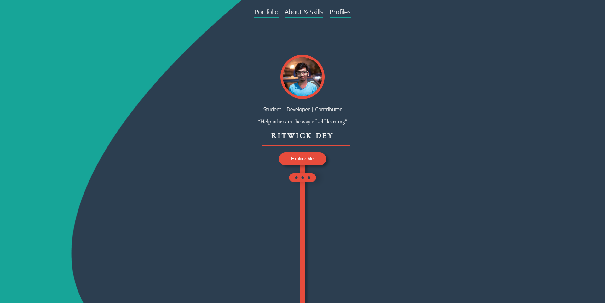

Research from Ritwick Dey - Portfolio

1) What was the first thing you paid attention to when interacting with the experience?
My first thing that I paid attention to the experience is the interface , it's clear and easy to understand what's his trying to express, but the style of the colour tone are too close to each which makes his profile page not really interesting.
2) Spend two minutes with the experience and create a list of each of your discrete actions.
I searched for the engaging elements in his page, such as reverse effects, filter effects , which allow me to realise that should be put in my project because it creates interactions,
3) What part of the experience did you spend the most time engaging with?
His profolio page, he created lots of engaging elements, such as reverse effect, filter effect, it interested me to wander around and how the elements was created.
4) What was the most common action in your two minute interaction with the experience?
Repeatedly viewing his portfolio because he has done various websites before, such as Organic Shop, Social Diary. He included lots of features in the websites making it pretty attractive to view.
5) What is your impression of the intended primary goal of the interactive experience?
It needs to have some component for user to interact with, encourage user to spend more time on the site.
6) What is your impression of how the interactive experience communicates its primary goal?
For the 'Explore Me' button, he uses the shaking effect, arrow, red colour background to make the interaction, which is successful as this design is eye-popping
7) What is your impression of how the experience should be interacted with over time? (For how long and how many different times)
In the first 15 minutes, I would think it's fine however it is getting boring for me becuase the pattens are fairly simple due to the simplicity of the colour palete that he had chosen.
8) What is your impression of how the interactive experience communicates how it should be interacted with over time?
Although he has the filpping interaction in the portfolio, but it has been repeated quite a lot , which would made user dizzy and it would definitely affect the tidiness of his portfolio.
9) What other media forms (digital or otherwise) does the experience reference?
The experience is referenced from applications and various links.
10) What does this reference or references suggest to you about how you should act when engaging with it?
I would reference from applications for more information and I would provides links for others to click on for more details.
11) What does this reference or references suggest to you about how you should feel when engaging with it?
I would like the feeling should be comfortable and fill with richness in order to enhance user experience.
12) What is the most frustrating element of the interaction to you and what makes it frustrating?
The placement in the interface is so empty that makes me frustrated as the usage of space is poor , it looks way too simple.
13) What is the most satisfying element of the interaction to you and what makes it satisfying?
The profile card of his impressed me and satisfy me the most. At first , I thought the page is lack of information and really boring to be honest, but after clicking on his profile card, the provided applications and his self introduction is quite delightful to read. The red line swirling into the card is really quite fasinating and it provides page with a bit playful atmostphere which is kinda nice. I think that animation is simple but important to the page.